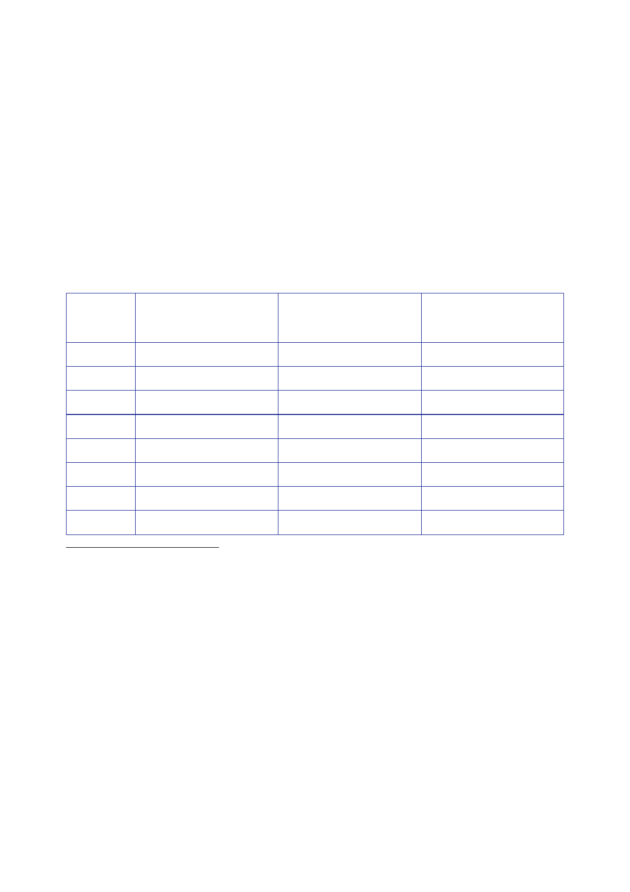

The Report
of the Iraq Inquiry
858.
The UK did not
provide additional bilateral debt relief for Iraq, beyond
the
agreement
reached at the Paris Club.
859.
Iraq, with
almost 50,000 applicants, was the biggest source of asylum seekers
to the
29
industrialised countries that provided monthly data to the UN High
Commissioner for
Refugees
(UNHCR) in 2002.530
Of those
applicants, 14,565 applied for asylum in the UK.
860.
Table 2 shows
the number of asylum applications to certain industrialised
countries
and the UK
originating in Iraq between 2002 and 2009.
531 532 533
534 535 536 537 538
Total
number
of
applications
originating
in Iraq
Number
of
applications
to the
UK
originating in Iraq
Percentage
of
total
applications
49,368
14,565
29.5
25,361
4,290
16.4
9,850
1,880
19.1
12,521
1,605
12.8
22,908
1,305
5.7
45,100
2,075
4.6
40,366
2,030
5.0
24,673
990
4.0
530
UNHCR, 24
February 2004, Asylum
Levels and Trends: Europe and non-European
Industrialized
Countries,
2003.
531
UNHCR, 24
February 2004, Asylum
Levels and Trends: Europe and non-European
Industrialized
Countries,
2003. Figures
reflect origin of asylum applications in 29 countries providing
monthly data
to
UNHCR.
532
UNHCR, 1
March 2005, Asylum
Levels and Trends: Europe and non-European
Industrialized
Countries,
2004. Figures
reflect origin of asylum applications lodged in 36 countries
providing monthly
data to
UNHCR.
533
UNHCR, 17
March 2006, Asylum
Levels and Trends in Industrialized Countries, 2005. Figures
reflect
origin of
asylum applications lodged in 36 countries providing monthly data
to UNHCR.
534
UNHCR, 23
March 2007, Asylum
Levels and Trends in Industrialized Countries, 2006. Figures
reflect
origin of
asylum applications lodged in 36 countries providing monthly data
to UNHCR.
535
UNHCR, 18
March 2008, Asylum
Levels and Trends in Industrialized Countries, 2007. Figures
reflect
origin of
asylum applications lodged in 43 countries providing monthly data
to UNHCR.
536
UNHCR, 24
March 2009, Asylum
Levels and Trends in Industrialized Countries, 2008. Figures
reflect
origin of
asylum applications lodged in 44 countries providing monthly data
to UNHCR.
537
UNHCR, 23
March 2010, Asylum
Levels and Trends in Industrialized Countries, 2009. Figures
reflect
origin of
asylum applications lodged in 44 countries providing monthly data
to UNHCR.
538
UNHCR, 28
March 2011, Asylum
Levels and Trends in Industrialized Countries, 2010. Figures
reflect
origin of
asylum applications lodged in 44 countries providing monthly data
to UNHCR.
502